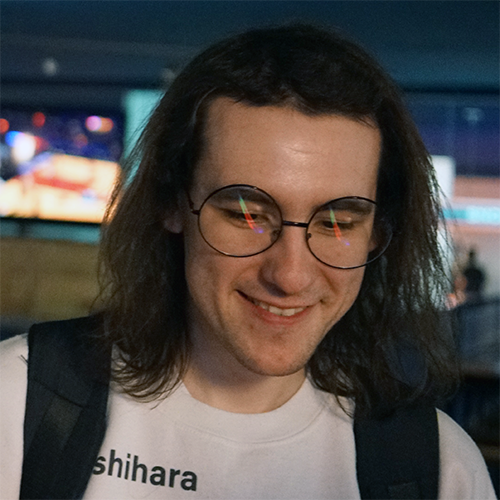

Spencer “ ” Gunning
multidisciplinary design · programming · computers

contact
skills
rhythm game
Arcaea – 12.97ptt
CHUNITHM – 14.40
SDVX – 12.644vf
StepMania – 18 pass
NotITG – 17 pass
charting
personal – 6 yrs.
professional – 4 yrs.
tools
adobe creative suite
vs code
git
fl studio
microsoft office suite
soft
creativity
adaptability
multitasking
problem solving
presentation
awards
15th of 34th overall
Technical Showcase 4 Finals
P.R.M.
11th of 84th overall; qualified for finals
Technical Showcase 4 Qualifier
Butterfly Twist
last updated
23 march 2024
projects + experience
aug. 2023 - present
CERiSTREAMS (in development)
stamina-oriented StepMania pack
- 25-song pack with 5 difficulty slots
- 3 self-mixed “marathons” with 1 difficulty only
- focus on long-form content, difficulty pacing, and restrictive use of patterning
apr. 2023 - present
CERiOLOGY (in development)
tech-oriented StepMania pack
- 25-song pack with 5 difficulty slots
- higher difficulties focus on execution of non-standard 4-panel skills
- lower difficulties build fundamentals, transitions to learning non-standard skills at an appropriate pace
may 2019 - jan. 2020
Misfits in the Prairie
collaboratively produced NotITG tournament
- eight-stage tournament of modded 4-panel content with a broad range of difficulty
- manage a group a team of other programmers, artists/storyboarders, and voice talent
- communicate effectively with venue organizers and volunteers to ensure tournament is run smoothly
- project lead, writer, programmer, level designer, ui/ux, graphic and audio designer, voice talent
mar. 2018 - dec. 2018
NJSRT
independently produced NotITG tournament
- six-stage tournament of modded 4-panel content with a broad range of difficulty
- project lead, writer, programmer, level designer, graphic and audio designer, venue organizer
education
sep. 2020 - may 2022
higher education
raritan valley community college (rvcc) · branchburg, nj
- associate of applied science, interface design and web development (gpa: 3.7)
- president’s list (spring 2021 & spring 2022), dean’s list all semesters
sep. 2016 - may 2018
higher education
new jersey institute of technology (njit) · newark, nj
- studied periodically originally intending to pursue a degree in computer engineering
- passed a number of high-level classes including circuits & systems ii, microprocessors, and computer architecture